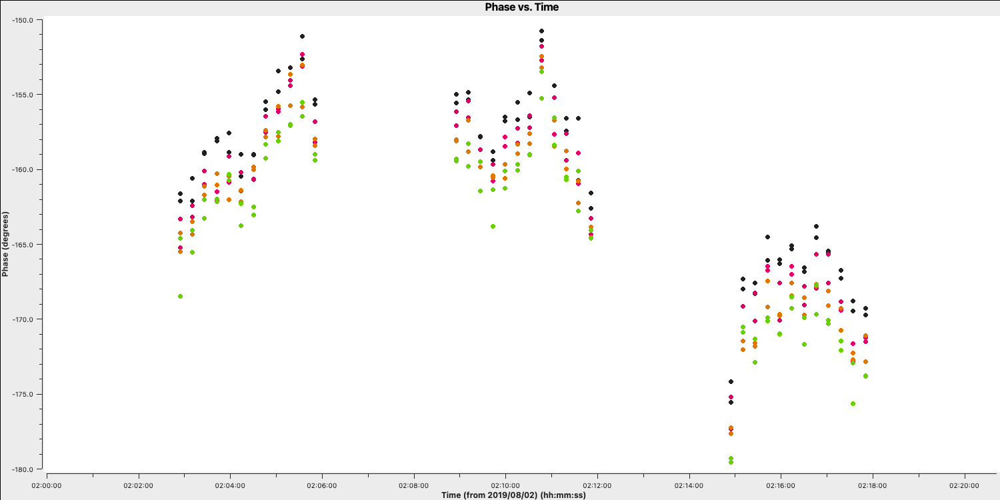

Self calibration
Data required
For this section, you want to continue on from your imaging tutorial folder and you should have the following files,
1252+5634.ms- measurement set containing just the 3C277.1 visibilities.3C277.1_imaging_outline2024.py- imaging script.3C277.1_imaging_all2024.py- cheat script containing the answers1252+5634_1.clean.*- images, models, residuals made during the imaging tutorial
Table of contents
- Inspect to choose interval for initial phase self-calibration (4-5)
- Derive phase self-calibration solutions (step 6)
- Apply first phase solutions and image again (7)
- Phase-self-calibrate again (8)
- Apply the solutions and re-image (9)
- Choose solution interval for amplitude self-calibration (10)
- Amplitude self-cal (11)
- Apply amplitude and phase solutions and image again (12)
- Summary
1. Inspect to choose interval for initial phase self-calibration (steps 4-5)
In this tutorial, we are going to explore the concept of self-calibration. The premise for self-calibration is simple. Instead of using a compact phase reference source (which we assume to be point-like) i.e., flat in amplitude and zero in phase, we instead assume that the calibrator is resolved. We then derive solutions assuming a model for the true sky brightness. It is called self-calibration as the source we use is often our target source which is used to calibrate itself. See the lectures for all the gory details on how this works.
As you may have guessed, we require a model of the true sky brightness distribution for us to do self-calibration. We have done that already (maybe without you noticing). When we performed our first tclean imaging run, we had set savemodel='modelcolumn'. This meant that our model image (our 'best guess' of the real sky), was Fourier transformed to create model visibilities (stored in the MODEL column of our measurement set). It is this model that we shall use to compare our visibilities to and correct for residual errors.
Let us inspect our model use plotms as we had done in step 1 to plot the model against $uv$ distance.
- Take a look at step 4. The parameters have already been set so execute the step. You can try over-plotting the data and model columns on the same GUI window interactively or look at the difference between data and model columns.
plotms(vis=target+'.ms', xaxis='uvdist', yaxis='amp', ydatacolumn='model', correlation='RR,LL', avgchannel='64', coloraxis='spw', plotfile='', overwrite=True, showgui=gui)
Below we have overplotted these for convenience in python. The top panel shows the visibilities (data column) with the model visibilities overlaid. You can see that our model from imaging is a pretty good approximation to the visibilities. In the bottom panel, the scalar differences are shown illustrating that the model is slightly underestimating the flux density of the source across a large $uv$ distance. These discrepancies are due to the antenna amplitude errors and will be corrected by self-calibration
Now we have our model present, we will begin by doing phase self-calibration first. As with standard calibration, we need to decide what sort of solution interval we require. However, we have an extra complication as that is the source structure. It can be hard to tell the difference between phase errors and source structure in the visibilities, but it helps to balance between choosing a longer interval to optimise S/N, and too long an interval (if possible the phase changes by less than a few tens of degrees). The phase will change most slowly due to source structure on the shortest baseline, Mk2&Pi, but you should also check that the longest baselines (to Cm) to ensure that there is enough S/N.
- Take a look at step 5. We want to plot phase against time, averaging all channels per spw (see
listobsfor the number of channels).plotms(vis=target+'.ms', xaxis='**', yaxis='**', antenna='**', correlation='**,**', avgchannel='**', coloraxis='spw', plotfile='', timerange='', overwrite=True, showgui=gui) - Once you are happy, execute step 5 and look at the GUI.
The plot below shows a zoom on a few scans. The chosen solution interval should also ideally fit an integral number of times into each scan. It is also a good idea not to use too short a solution interval for the first model. This is because the model may not be very accurate, so you don't want to constrain the solutions too tightly.
Looking at this plot, we can see that something along a 2-4 min solution interval should be ok to track the phases without too many failed solutions. Keep your solution interval to hand as we want to now derive these corrections.
2. Derive phase self-calibration solutions (step 6)
Let's use gaincal to derive solutions.
- Take a look at step 6 and enter the parameters in
gaincalto conduct phase-only calibration using your selected solution interval,gaincal(vis=target+'.ms', calmode='**', # phase only caltable='target.p1', field=target, solint='**', # about half a scan duration refant=antref, minblperant=3, minsnr=5) - We also want to plot these solutions which are done for both polarisations separately using the following code,
plotms(vis='target.p1', gridcols=2, gridrows=3, xaxis='time', yaxis='phase', iteraxis='antenna', coloraxis='spw', plotrange=[-1,-1,-180,180], correlation='L', plotfile='target.p1_L.png', overwrite=True, showgui=gui) plotms(vis='target.p1', gridcols=2, gridrows=3, xaxis='time', yaxis='phase', iteraxis='antenna', coloraxis='spw', plotrange=[-1,-1,-180,180], correlation='R', plotfile='target.p1_R.png', overwrite=True, showgui=gui) - If you are happy, execute step 6
- Check the terminal and logger; there should be no (or almost no) failed solutions.
You should have solution that look like those below (we used a 180s solution interval). The corrections should be coherent, as they are, and represent the difference caused by the different atmospheric paths between the target and phase-ref, but they may also have a spurious component if the model was imperfect. The target is bright enough that a shorter solution interval could be used. So, these solutions are applied, the data re-imaged and the corrections refined iteratively.
3. Apply first phase solutions and image again (step 7)
Let's continue by applying these solutions to the measurement set. Remember that the premise of self-calibration is that we use an iterative approach to gradually improve the calibration of these data. This means we have to get a new improved model (therefore need to correct these data for imaging)
- Take a look at step 7. There's a lot to enter here but most of these you have worked out in previous steps. Firstly, we want to enter the calibration table we just made into
applycal,applycal(vis=target+'.ms', gaintable=['**']) # enter the name of the gaintable - Next, we will want to image these data again to generate our new, better model. The weighting and resolution shouldn't change so we want to use the same parameters as we had done previously. Note that the number of iterations has increased as we expect a higher S/N due to phase self-calibration.
tclean(vis=target+'.ms', imagename=target+'_p1.clean', cell='**arcsec', niter=3000, cycleniter=300, deconvolver='clark', savemodel='modelcolumn', imsize=['**','**'], interactive=True) - Finally, we want to record the rms and peak brightnesses so we can see if there's an improvement. As out imaging parameters are the same, you should try to use the same boxes,
rmsp1=imstat(imagename=target+'_p1.clean.image', box='**,**,**,**')['rms'][0] peakp1=imstat(imagename=target+'_p1.clean.image', box='**,**,**,**')['max'][0] - If you are happy with all of these entries, execute step 7. This may take a minute as the $\texttt{CORRECTED}$ data column needs to be generated.
With these corrections applied we will CLEAN using tclean, as before, but you will be able to do more iterations as the noise should be lower.
Once this is complete we will get the peak and rms values. I managed to get $S_p \sim 168 \,\mathrm{mJy\,beam^{-1}}$ and $\sigma \sim 0.282\,\mathrm{mJy\,beam^{-1}}$. This is a massive $\mathrm{S/N}$ increase to $\sim 595$ from $225$ before phase self-calibration.
Important: A key indicator if self-calibration is improving your data is that the S/N should increase each iteration. Do not rely on measuring the rms/peak individually as the self-calibration model could artificially reduce all amplitudes (peak and noise) with no S/N improvement!
4. Phase-self-calibrate again (step 8)
Now that the model is better, use a shorter solution interval. Heuristics suggest that 30s is usually about the shortest worth using, because the atmosphere is reasonably stable on these baseline lengths at this frequency.
- Take a look at step 8 and enter the parameters for
gaincalas before, but now reduce the solution interval to 30s,gaincal(vis=target+'.ms', calmode='**', caltable='target.p2', field=target, solint='**', refant=antref, gaintable=['**'], interp=['**'], minblperant=3,minsnr=5) - Have a look at the rest of the step which will produce plots of the calibration table
- When you are happy execute step 8 and take a look at the plots.

Because we apply the first self-calibration table on the fly, the resultant corrections will be smaller in amplitude that the original corrections. This is a good sign that the self-calibration is working as the phase errors in your data become smaller and smaller. You can see this in the plot below where we have overplotted the first and second calibration table which shows that the standard deviation of the solutions reduces (dotted lines). If you find that the solutions are noisier, then something may be going wrong (e.g., too small of a solution interval was used).
5. Apply the solutions and re-image (step 9)
Let's apply these solutions and re-image.
- Take a look at step 9 and enter the parameters into
applycalas before, but making sure we add the new gaintable to the list.applycal(vis='1252+5634.ms', gaintable=['**', '**'])
We also want to image again in this step. From listobs, the total bandwidth is ~10% of the frequency, which is enough for us to need to take the spectral index into account. Cotton et al. (2006) finds the spectral index varies from $-0.1$ in the core to as steep as $-1$.
listobs showed the total bandwidth is 4817 to 5329 MHz, i.e. for flux density $S$, $S_{4817}/S_{5329} = (4817/5329)^{-1}$ or about 10%. The improved S/N gives much greater accuracy. Thus, in order to image properly and produce an accurate image to amplitude self-calibrate on all spectral windows, multi-term multi-frequency synthesis (deconvolver='mtmfs') imaging is used. This solves for the sky model changing across frequency.
- Enter the imaging parameters into the
tcleanstep and the box sizes into the image statistics to track the S/N,tclean(vis=target+'.ms', imagename=target+'_p2.clean', cell='**arcsec', niter=4500, # stop before this if residuals reach noise cycleniter=500, gain=0.2, imsize=['**','**'], deconvolver='mtmfs', savemodel='modelcolumn', nterms=2, # Make spectral index image interactive=True) rmsp2=imstat(imagename=target+'_p2.clean.image.tt0', box='**,**,**,**')['rms'][0] peakp2=imstat(imagename=target+'_p2.clean.image.tt0', box='**,**,**,**')['max'][0] - Once you are happy execute step 9 and clean the image! Make sure you clean till as much target flux as possible has been removed into the model - you can increase the number of iterations interactively if you want.
- Use
lsto see the names of the image files created. The image name is1252+5634_p2.clean.image.tt0.
If we check the image using the same boxes as before, I get $S_p \sim 174.779\,\mathrm{mJy\,beam^{-1}}$ and $\sigma \sim 0.155\,\mathrm{mJy\,beam^{-1}}$. This is another large $\mathrm{S/N}$ increase to $\sim 1126$.
6. Choose solution interval for amplitude self-calibration (step 10)
Now that we have got the phases in order, we can work on the amplitudes instead. We firstly want to check what an appropriate solution interval will be so we want to use plotms to get this information
- In step 10, use
plotmsto plot the amplitude versus time of the shortest baseline then execute the stepplotms(vis=target+'.ms', xaxis='**', yaxis='**', ydatacolumn='**', antenna='**&**', correlation='RR,LL', avgchannel='64', coloraxis='spw', timerange='', plotfile='', overwrite=True, showgui=gui)
You should find a plot similar to that below. The smooth amplitude changes across the duration of the observation are not due to the antennae errors but due to the structure of the source (antennae errors should be on shorter timescales and less smooth). Remember that the projected baseline length changes over time so the sky the baseline 'sees' also changes.

- For us to find a suitable solution interval, we therefore want to zoom in on a few scans using the GUI like those shown below

- You can see that on an integration to integration it looks like random noise, therefore we want a longer solution interval. Experiment with averaging the time at different intervals. A safe bet to start would be to combine the solutions per scan (
solint='inf')
7. Amplitude self-cal (step 11)
In gaincal, the previous gaintable with short-interval phase solutions will be applied, to allow a longer solution (averaging) interval for amplitude self-calibration.
- Take a look at step 11 and set up
gaincalto calibrate amplitude and phase, with a longer solution interval, and the same refant etc. as before.gaincal(vis=target+'.ms', calmode='**', caltable='target.ap1', field=target, solint='**', refant=antref, solnorm=True, #Normalise solutions as we have already set the flux scale gaintable=['**','**'], minblperant=3, minsnr=5) - Once you are happy, execute step 11
This step will also plot the solutions for each polarisation separately (L polarisation is shown below). They should mostly be within about 20% of unity. A few very low/high points implies some bad data. If the solutions are consistently much greater than unity then the model is missing flux.

8. Apply amplitude and phase solutions and image again (step 12)
We are almost finished and now have corrections for phase and amplitude which we can use to remove all these errors. In reality, you may want to do more cycles of self-calibration to further refine the calibration, however, for practical purposes, we are going to apply our solutions and end here.
- In step 12, enter the parameters to apply all the calibration tables, make a final image, and record the statistics of the final image (use the same parameters as before)
applycal(vis=target+'.ms', gaintable=['**','**','**'], calwt=False) # clean amp&phase self-calibrated image os.system('rm -rf '+target+'_ap1.clean*') tclean(vis=target+'.ms', imagename=target+'_ap1.clean', cell='**arcsec', niter=5000, # stop before this if residuals reach noise cycleniter=500, gain=0.2, imsize=['**','**'], deconvolver='mtmfs', savemodel='modelcolumn', nterms=2, # Make spectral index image interactive=True) rmsap1=imstat(imagename=target+'_ap1.clean.image.tt0', box='**,**,**,**')['rms'][0] peakap1=imstat(imagename=target+'_ap1.clean.image.tt0', box='**,**,**,**')['max'][0] - Once you are done, execute the step and clean the image.
For this final image using the same boxes as before, I get $S_p \sim 174.771 \,\mathrm{mJy\,beam^{-1}}$ and $\sigma \sim 87.42\,\mathrm{\mu Jy\,beam^{-1}}$. This is another large $\mathrm{S/N}$ increase from $\sim 1126$ to $1999$.
9. Summary of self-calibration
While we have only done three rounds of self-calibration, it is worth noting that you would be expected to do more iterations until the improvements in S/N plateaus and no noticeable improvements are seen in the image. Below, you can see the image improvements at each stage of the self-calibration process and the corresponding improvements in the S/N.
| Peak brightness | Noise (rms) | S/N | |
|---|---|---|---|
| [$\mathrm{mJy\,beam^{-1}}$] | [$\mathrm{mJy\,beam^{-1}}$] | ||
| Phase referencing | 160.96 | 0.715 | 225 |
| Phase only | 167.79 | 0.282 | 595 |
| Phase x 2 | 174.78 | 0.155 | 1126 |
| Amplitude + phase x 2 | 174.77 | 0.0874 | 1999 |
| Multiple amp. + phase | 177.32 | 0.0479 | 3701 |
In the rightmost panel, you can see the result if we continue the self-calibration process (reaching 15 and 30s solution intervals for phase and amplitude, respectively). The majority of these errors have disappeared, the image fidelity has improved significantly and the S/N has peaked at around 3700. If you would like to continue the self-calibration process, the calibration script can be found here. Note that not all errors are gone and specialist algorithms and careful flagging of these data is required to improve the S/N further. For the final tutorial on advanced imaging, we shall use this fully self-calibrated data set.